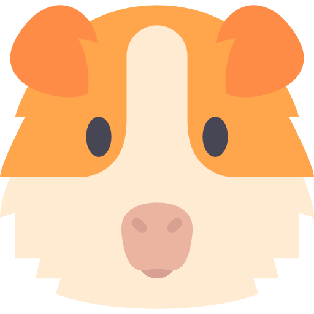

Curiosidades mais peculiares sobre os Porquinhos da Índia
Conseguem se comunicar
Esses pequenos se comunicam por diversos meios, os quais têm diferentes significados, por exemplo: se cumprimentam ao tocarem o nariz, podem fingir de mortos caso haja presença de predadores e até pedem atenção através da emissão de sons.
Comem as próprias fezes
São cecofágicos ou cecotrófagos, ou seja, são animais que apresentam o hábito fisiológico de ingerirem suas próprias fezes. Os cecotrofos (fezes), ao serem excretados, voltam a ser ingeridos, passando novamente por todo o processo digestivo, mas desta vez com um maior índice de digestibilidade dos alimentos, permitindo um maior aproveitamento nutritivo deles. Caso essa prática seja interrompida, perdem peso, digerem menos fibras e eliminam mais minerais.
Não adquira um casal
Ao contrário do que se pensa, o ideal não é adquirir um casal para fazerem companhia, pois acabam por passar mais tempo separados do que juntos devido as crias em sequência. As fêmeas são capazes de engravidar logo após o parto.
Crescem muito rápido
Outra curiosidade sobre os porquinhos-da-índia é que eles são animais de crescimento muito rápido. Durante as primeiras semanas de vida eles ganham até 50 gramas por semana, o que é bastante notável considerando o pequeno tamanho destes animais. Depois disso, o crescimento desacelera. Mas quando o porquinho-da-índia para de crescer? Usualmente, ele atinge o tamanho adulto aos 14-15 meses de idade.
Podem dormir com os olhos abertos
Uma curiosidade sobre os porquinhos-da-índia bastante interessante diz respeito ao seu sono: apesar de terem pálpebras móveis que lhes permitem fechar os olhos, muitos porquinhos- da-índia dormem com os olhos abertos. Alguns o fazem com regularidade, outros apenas esporadicamente. Este é simplesmente um mecanismo de defesa que eles desenvolveram para serem capazes de agir rapidamente em qualquer situação de risco, mesmo quando estão dormindo.
Vive quanto tempo em média?
O Porquinho da India vive em média de 5 a 8 anos, isso varia bastante de acordo com os cuidados oferecidos a ele.
Alimentação
Ração peletizada
A ração peletizada, também chamada de alimento extrusado, é uma das bases da alimentação do porquinho-da-índia. Ela deve ser oferecida diariamente, sendo que a quantidade varia de acordo com o peso e a idade do seu amigo. Nutrópica: Um pouco mais cara, mas não precisa dar vitamina C a mais. Apenas a versão normal é recomendada, a Muesli não. XilaNutri: Precisa dar vitamina C a parte mas o preço é bom. Megazoo: Preço médio mas não precisa dar vitamina C a parte.
O que eles podem comer?
Feno de capim e de alfafa, não se surpreenda ao perceber que o porquinho-da-índia passa o dia todo mastigando. De fato, o organismo desses pet é “programado” para receber alimentos de maneira contínua, sendo que o feno é o alimento mais consumido, com papel importante na saúde dos porquinhos. Obtido por meio da desidratação de gramíneas e leguminosas, o feno tem boa durabilidade e é muito rico em fibras. Sua ingestão é importante para manter o trânsito intestinal, evitando a estase, isto é, a parada dos movimentos do intestino. Frutas permitidas, entre o que porquinho-da-índia pode comer, algumas frutas são permitidas. Nesse caso, o alimento deve ser oferecido ao porquinho-da-índia entre 2 a 3 vezes por semana. Se possível, varie a escolha das frutas a fim de garantir diferentes vitaminas e minerais. As frutas devem estar sempre bem lavadas e fresquinhas. Entre elas estão maçã, pera, caqui, melancia, melão, banana, amora, mamão, morango, manga e goiaba. Legumes e verduras, as verduras pode ser oferecida diariamente ao porquinho-da-índia. Já os legumes podem entrar para a dieta dia sim, dia não, ou seja, de três a quatro vezes por semana. Assim como deve ser feito com as frutas, legumes e verduras devem ser fornecidos frescos e bem lavados. Feito isso, alguns dos melhores alimentos são: abobrinha, abóbora, beterraba, brócolis, chuchu, couve, cenoura, rúcula, repolho, pepino e tomate.
O que não podem comer?
O que não podem comer? Algumas comidas não são totalmente proibidas, mas devem ser dadas em poucas quantidades. Elas não prejudicam a saúde em doses pequenas, mas o alto consumo pode causar sérios problemas no intestino. São elas:
- Uvas
- Aveia
- Cevada
- Sementes
- Pão
- Salsa
- Sementes de girassol
- Alface americana
- Rúcula
- Alface roxa
- Couve-flor
- Beterraba
- Rabanete


Doenças
São os casos mais comuns em porquinhos-da-índia. O principal ponto é ter cuidado com a dieta. As pessoas tendem a dar uma alimentação errada para esses animais. Eles não podem comer qualquer legume ou folhagem.
- Alterações gastrointestinais parasitárias por dieta inadequada
- Modificações dentárias
- Sarna
- Anorexia
- Problemas Respiratórios
Vacinação
Não precisam de vacinas
Ao contrário de muitos outros animais de estimação, como cães e gatos, os porquinhos da índia não têm um programa de vacinação padrão. Até o momento, não existem vacinas específicas desenvolvidas para proteger os porquinhos da índia contra doenças. No entanto, isso não significa que você deve negligenciar a saúde do seu porquinho da índia. Existem outras medidas preventivas e práticas de cuidados essenciais que você deve seguir para garantir a saúde do seu pet. Para melhores informações é de extrema importância que vá a um veterinário de sua confiança.